AI Music Video (MV) Creation
The end-to-end flow to create an AI music video on the web: compose a brief (type, song, description, character photos, output settings), choose storyboard-first or direct generation, watch generation, optionally review and edit a storyboard, view the result, and see the finished MV appear in History.
| Platform | YouCam Muse Web (desktop) — captured at 1440px |
| Audience | QA |
| Scope | Storyboard-first end to end (P1), direct generation with Templates only (P2), generation failure at both stages (P3), the six compose sheets and their numeric boundaries (P4), the guest sign-in gate (P5), insufficient credits (P6), the Trending MVs / My Creations side-rail swap (P7), and a controls tour of /mv/result (P8). |
| Out of scope | /mv/edit (MV-P5 in the area spec) — see specs/storyboards/mv-edit (S3, postponed). History’s own behavior (filters, ⋯ menu, publish, delete) — see specs/areas/05-history.md. |
| Source | specs/areas/02-mv-creation.md, specs/areas/05-history.md, specs/00-overview.md, and the running app |
↓ Flow Diagram — full user journey (click to expand)
Mermaid source
flowchart TD Entry["Sidebar "AI Music Video""] --> Compose["Compose - type, song, description, photo (P1-S1..S8)"] Compose --> Create["Tap Create Music Video"] Create --> Mode{Mode?} Mode -->|Storyboard First| Think["/mv/thinking"] Mode -->|Directly, Templates only| Rendering["/mv/creating"] Think --> Outcome1{Job outcome} Outcome1 -->|done| SB["/mv/storyboard (edit)"] Outcome1 -->|"[fail]"| Failed1["Generation Failed"] SB --> |Generate MV| Rendering Rendering --> Outcome2{Job outcome} Outcome2 -->|done| Result["/mv/result (P8: controls tour)"] Outcome2 -->|"[fail]"| Failed2["Generation Failed"] Result --> History["/history (P1/P2 closing step)"]
| ID | Path | Entry point | Steps | Outcome |
|---|---|---|---|---|
| P1 | Storyboard-first — happy path | Sidebar “AI Music Video” | 15 steps | New row in History |
| P2 | Direct generation — Templates only | /mv/room (continuing from P1’s History) | 6 steps | New row in History (second row) |
| P3 | Generation failure — both stages | /mv/room | 3 steps | Generation Failed screen |
| P4 | The six sheets and their boundaries | /mv/room | 8 steps | Varies per step |
| P5 | Guest sign-in gate | Signed-out visitor at /mv/room | 4 steps | Signed in, resuming the gated action |
| P6 | Insufficient credits | Signed-in user, balance below the storyboard cost | 1 steps | Buy-credits IAP opens instead of generating |
| P7 | Trending MVs vs My Creations | Signed-in user with ≥1 completed MV revisits /mv/room | 2 steps | Side rail shows My Creations |
| P8 | Result screen — controls tour | Arrives at an already-generated /mv/result (any path) | 5 steps | Varies per step |
Compose a brief, review and edit an AI-drafted storyboard, then render. Ends with the new row in History.
- P1-S1 Arrives at /mv/room.
- P1-S2 Taps the third MV-type card.
- P1-S3 Taps Song Library, then hovers the first row.
- P1-S4 Taps Use on “My Wedding Ballad”.
- P1-S5 Taps Confirm.
- P1-S6 Types a description.
- P1-S7 Taps a Sample Photo.
- P1-S8 Both a song and a description now exist.
- P1-S9 Taps Create Music Video.
- P1-S10 Taps Create Storyboard First.
- P1-S11 The storyboard job finishes.
- P1-S12 Scrolls to and taps Generate MV.
- P1-S13 Waits for the render to finish.
- P1-S14 The render finishes.
- P1-S15 Opens History from the sidebar.
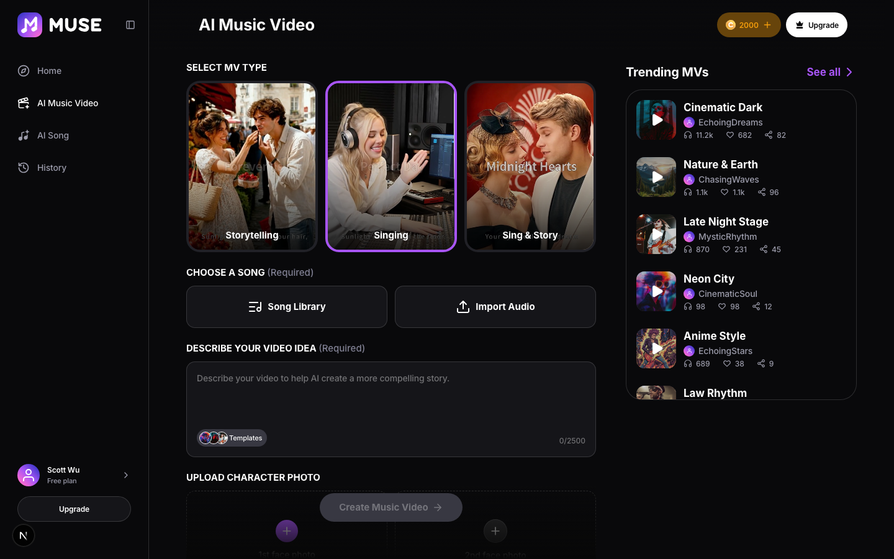
- Title: “AI Music Video”
- Section labels: “SELECT MV TYPE”, “CHOOSE A SONG (Required)”, “DESCRIBE YOUR VIDEO IDEA (Required)”, “UPLOAD CHARACTER PHOTO”
- Song source buttons: “Song Library”, “Import Audio”
- Create Music Video stays disabled while song is unset OR the description is empty (AC-MV-01).Both are required; either alone is not enough.
- Character photo and Settings are both optional at this step.
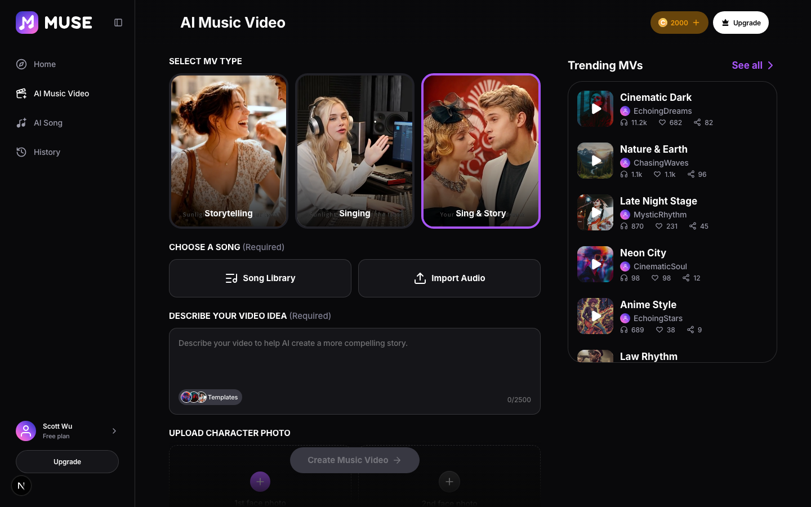
- 1Sing & Story
- Card labels: “Storytelling”, “Singing”, “Sing & Story”
- The third card’s on-screen label is “Sing & Story”, not “Hybrid” (product owner request).Its internal id stays `hybrid` — a frozen contract field; only the DISPLAY name changed.
- The three autoplaying preview videos ARE the type introduction — there is no separate carousel.
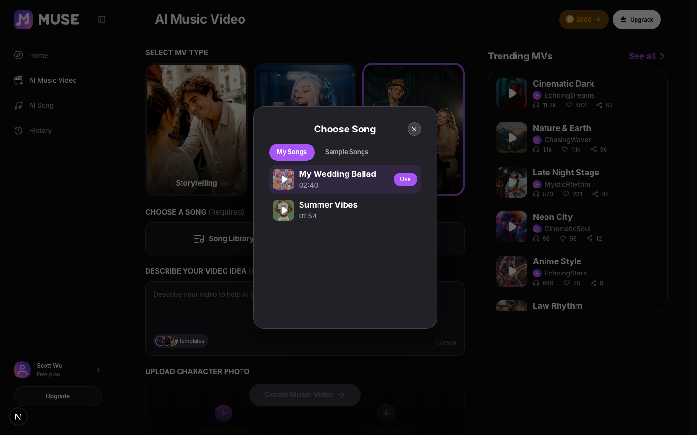
- 1Use
- Dialog title: “Choose Song”
- Tabs: “My Songs” (default), “Sample Songs”
- The Use pill is hidden (opacity 0) until its row is active.Hovering, tapping, or focusing a row starts its preview AND reveals Use — a plain click on a row alone never selects the song.
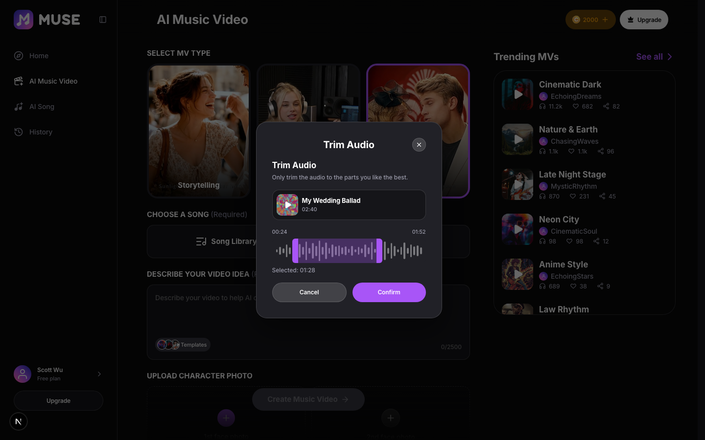
- 1Confirm
- Dialog title: “Trim Audio”
- Subtitle: “Only trim the audio to the parts you like the best.”
- Footer button: “Confirm” — not “Use Trimmed Audio”.
- Default selection is a mid-track window, not the full song.
- The selected length must be ≥30s or Confirm stays disabled (MV-01, AC-MV-16).See P4-S5 for the disabled state at the floor.
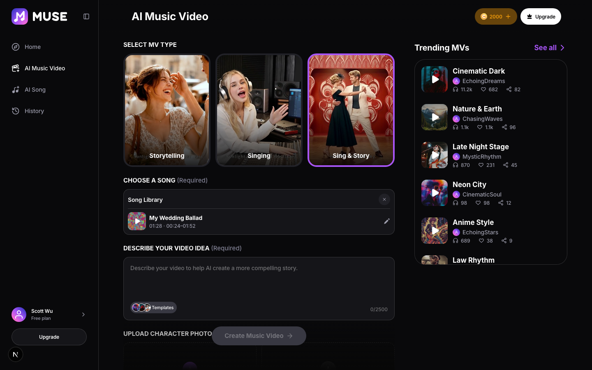
- Source label: “Song Library”
- The card shows the TRIMMED duration, not the source track’s full length.
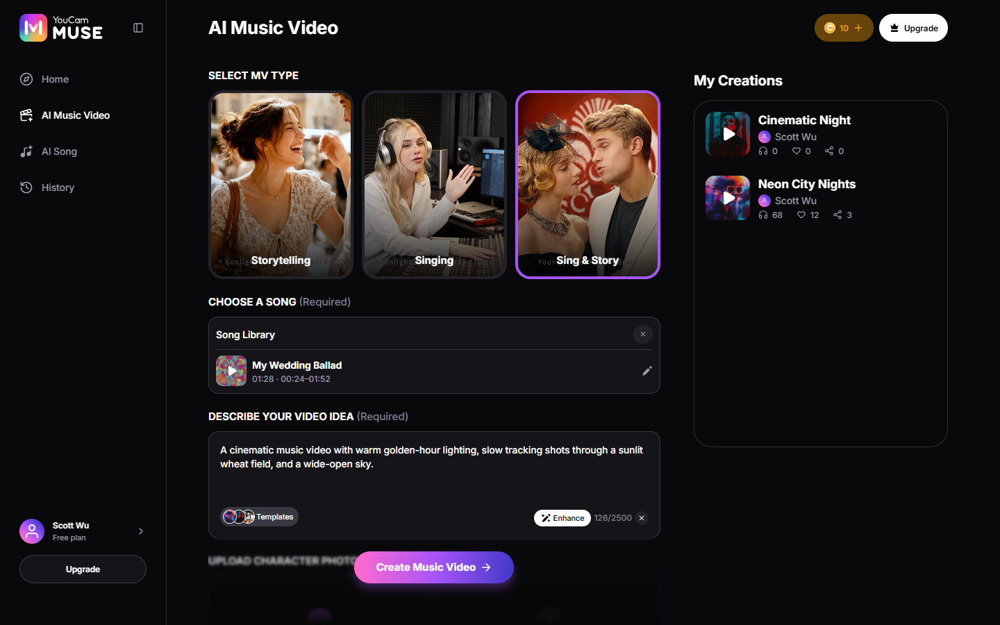
- Counter format: “126/2500”
- Typed/pasted input is capped at 2500 characters (AC-MV-03), confirmed via a real fill event.A programmatic value assignment bypasses `maxLength`; only a real browser fill/paste event proves the cap.
- The only fill shortcut on this field is Templates (P2-S1) — Enhance was removed from this screen for V1.`enhancePrompt` itself is unchanged and reachable from /mv/storyboard and /mv/edit; only /mv/room stopped rendering the button (2026-08-25, product owner). See D-08.
- Templates’ own fill is not length-capped (only typed/pasted input is).

- 1Sample photo
- Secondary slot label: “2nd face photo (Optional)”
- Character photo is optional; the CTA does not need one.
- Sample Photos skip the consent dialog and FacePicker crop (P4-S6).They are pre-cropped fixtures.
- Up to 2 photos.
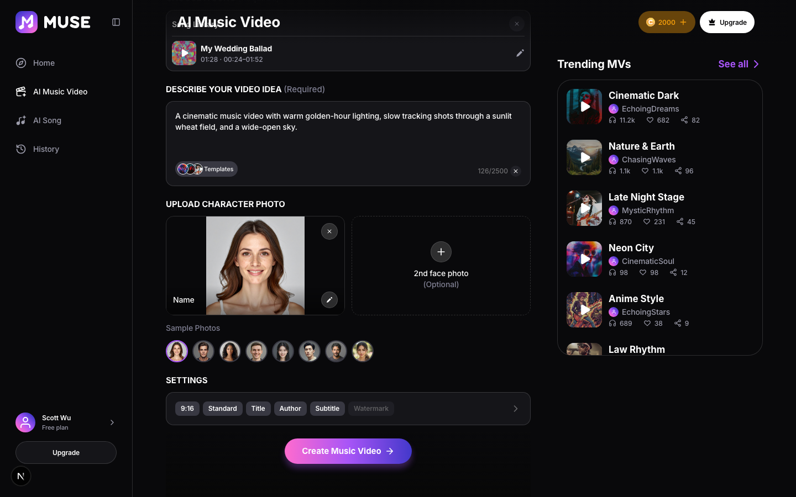
- 1Create Music Video
- Settings defaults: 9:16, Standard quality, MV Title on, Author Name on, Show Subtitle on, Show Watermark off.Unchanged unless the user opens Settings (P4-S7).
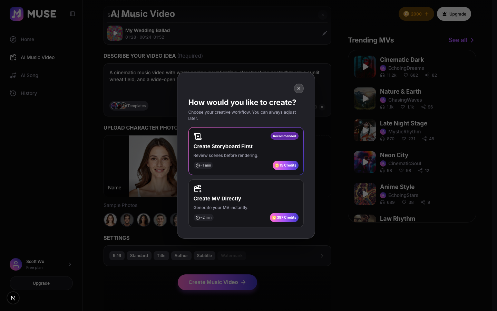
- 1Create Storyboard First
- Title: “How would you like to create?”
- Subtitle: “Choose your creative workflow. You can always adjust later.”
- Card 1: “Create Storyboard First” — “Review scenes before rendering.” — badge “Recommended” — “~1 min”.
- Card 2: “Create MV Directly” — “Generate your MV instantly.” — “~2 min”.
- Both cards show a live credit cost, priced per second of the trimmed song.Exact amounts come from the Credit Consume MSR (References), not asserted here.
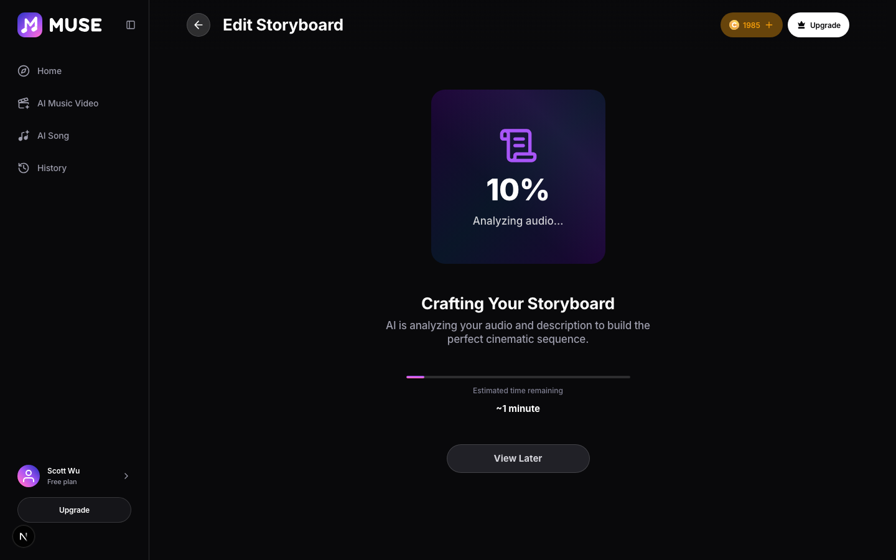
- Title: “Edit Storyboard”
- Heading: “Crafting Your Storyboard”
- Estimate label: “Estimated time remaining” — “~1 minute”.
- Link: “View Later” → /history.
- Charges the storyboard cost on start; refunds in full on failure (AC-MV-19).Exact amounts come from the Credit Consume MSR (References), not asserted here.
- The job starts exactly once per generation, even when the mount effect runs twice (D-09).Fixed 2026-08-27 (`e739c4e`) — guarded by a unit test that mounts the screen twice as React’s dev build does, mutation-tested both directions. The double-invoke is a DEV-build behaviour, so the browser suite (which serves a production build) cannot see it.
- The “~1 minute” estimate is display-only; the mock resolves in a few seconds (prototype_deltas).
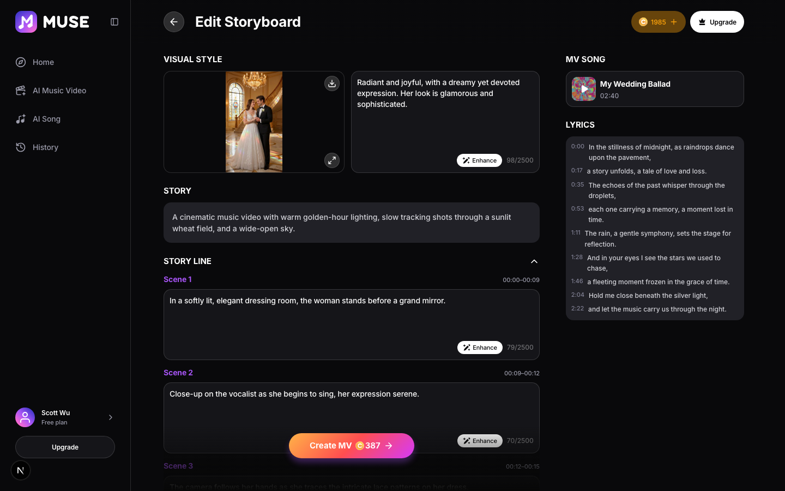
- Section labels: “VISUAL STYLE”, “STORY”, “STORY LINE”, “MV SONG”, “LYRICS”
- Per-field Enhance pills beside Visual Style and each Scene.
- Visual Style and each Scene’s text are editable; Story and Lyrics are read-only.AC-MV-08.
- The MV Song is play-only here — tap its thumbnail to preview, but it cannot be changed.Locked after creation; changing the song means starting a new MV from /mv/room.
- There is no Save button.Edits are ephemeral in memory and carried into the next Generate MV / Merge tap, never persisted independently (AC-MV-08).
- This Enhance is the same `enhancePrompt` call the removed /mv/room shortcut used to reach (D-08).Still fully functional — just relocated to fields that kept it.
- 1Generate MV
- Renders using whatever the storyboard currently holds, including any unsaved edits made in this session.There is nothing to explicitly save first.
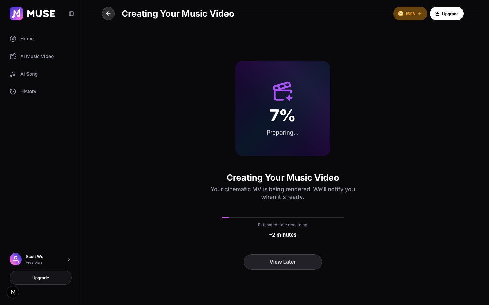
- Title: “Creating Your Music Video”
- Subtitle: “Your cinematic MV is being rendered. We’ll notify you when it’s ready.”
- Estimate: “~2 minutes”.
- This screen is deliberately still the pre-migration shared `GenerationView`, not a designer-UI screen.Source: specs/areas/02-mv-creation.md §1 — DP has no design for /mv/creating.
- Charges the render cost on start; refunds in full on failure (AC-MV-19).Exact amounts come from the Credit Consume MSR (References), not asserted here.
- Title: “Result”
- The full control set is toured independently in P8, starting from a result screen just like this one.
- Publish starts Off and Edit MV reads plain “Edit MV” here.The “Unpublish to edit” state (P8-S3/S4) only appears once published.
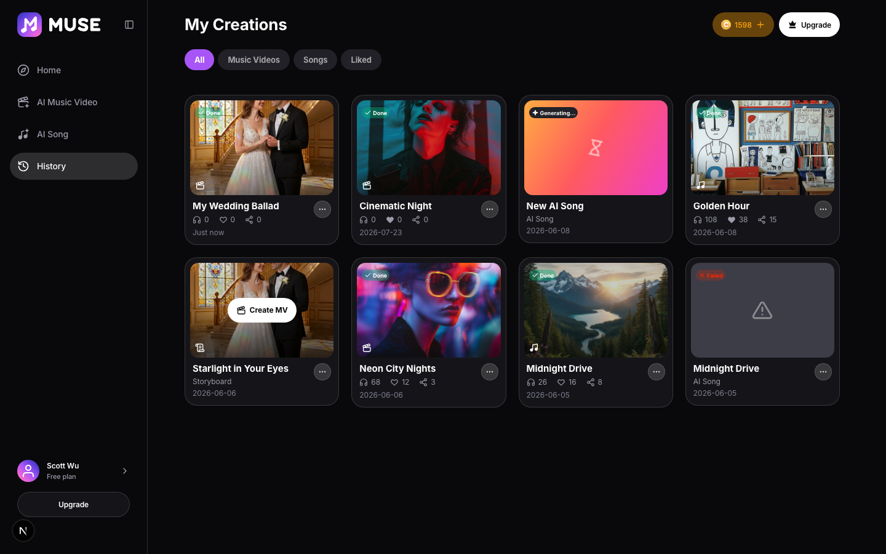
- Page title: “My Creations” — not “History”, despite the /history route.
- New rows are prepended — most recent first.
- History’s own filters, row menu, publish, and delete are out of scope here — see specs/areas/05-history.md.
A brief filled from a Template, then rendered directly with no storyboard review stage. Enhance is deliberately NOT part of this path.
- P2-S1 Taps Templates.
- P2-S2 Picks “Cinematic Dark”, then taps Confirm.
- P2-S3 Adds a song and a sample photo (same flow as P1-S3…S7).
- P2-S4 Taps Create Music Video, then reviews the mode chooser.
- P2-S5 Taps Create MV Directly.
- P2-S6 Opens History from the sidebar.
- 1Confirm
- Dialog title: “Select a Template”
- Template names shown: “Neon City”, “Cinematic Dark”, “Late Night Stage”, “Anime Style”, “Nature Earth”, “Urban Performer”
- Templates fill from a fixed content pool (T1), not an AI generation on tap.6 preset templates, each a name + cover + written prompt.
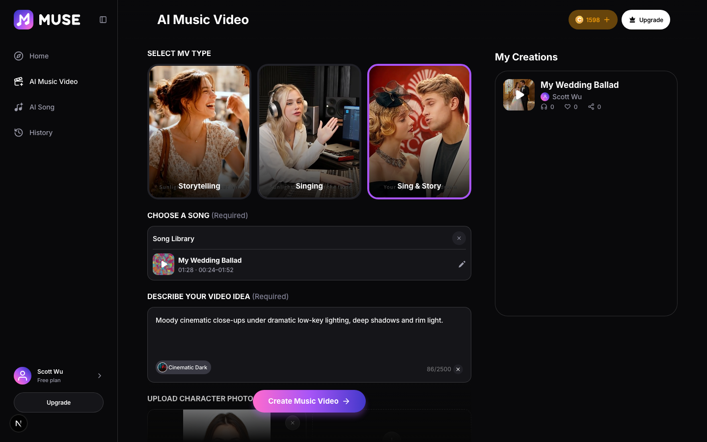
- 1Templates
- Selecting a template does not auto-select or lock a song.The song still has to be added separately — a claim to the contrary in an older spec version was wrong (TBD-MV-05).
- Templates’ fill is not length-capped (AC-MV-03 only bounds typed/pasted input).
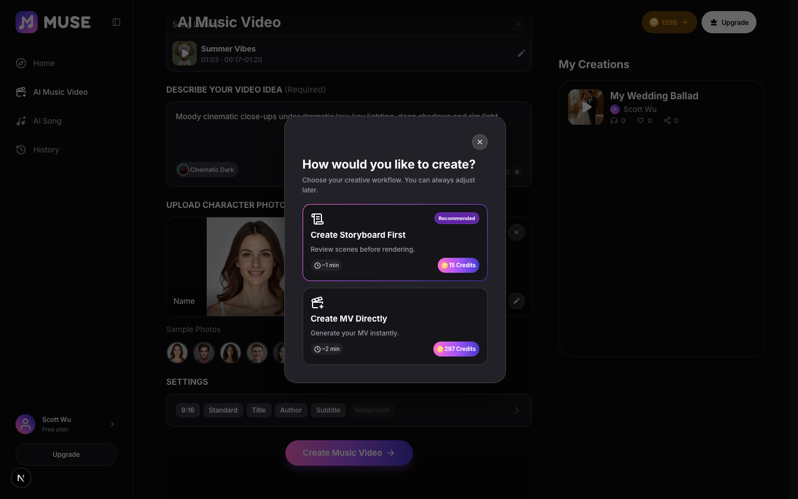
- 1Create MV Directly
- Card 2 subtitle: “Generate your MV instantly.”
- Enhance is not offered anywhere in this path.It never appears on /mv/room (removed for V1, D-08) and this path never visits /mv/storyboard, the only other screen with a Describe-adjacent Enhance.
- Direct mode renders from the compose brief with no editable intermediate storyboard.Contrast P1, which stops at /mv/storyboard for review before rendering.
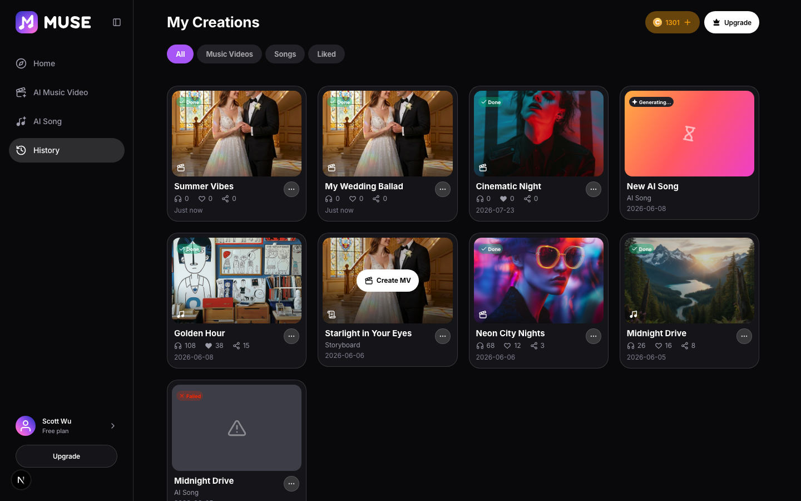
- Same list behavior as P1-S15.
A QA hook forces a mid-generation failure at each of the two stages a generation can start from.
- P3-S1 Composes a brief whose description contains the “[fail]” marker.
- P3-E2 Picks Create Storyboard First; the job fails around 60% progress.
- P3-E3 A fresh “[fail]” brief, this time picking Create MV Directly; the job fails around 60% progress.
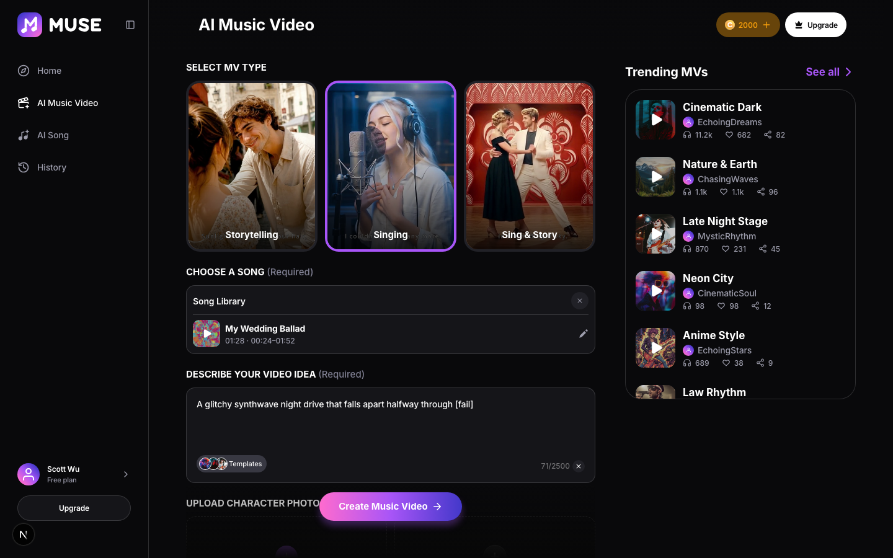
- 1Create Music Video
- The “[fail]” marker is read once, when the job is first created, and reused when it re-renders.So a storyboard-first job with this marker fails at the STORYBOARD (thinking) stage; a direct job fails at CREATING — never both, and never at the other stage.
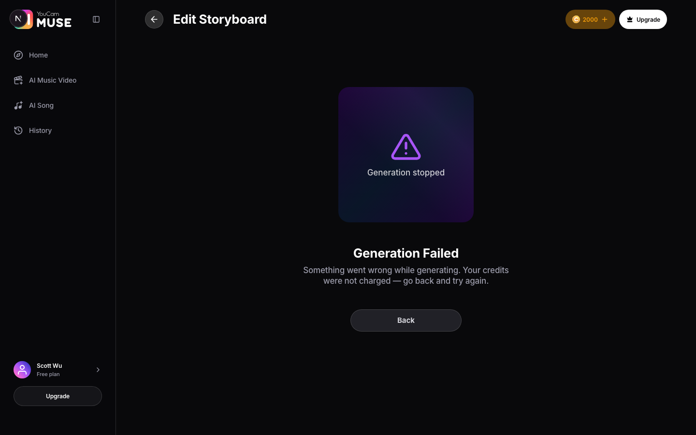
- Heading: “Generation stopped” (icon caption) / “Generation Failed” (title)
- Body: “Something went wrong while generating. Your credits were not charged — you can retry now or adjust your input and try again.”
- Buttons: “Retry”, “Back”
- Back returns to /mv/room.
- Retry re-runs the SAME compose, which still contains “[fail]”, so it re-fails deterministically (MV-E1).The copy says “adjust your input” but Retry itself performs no in-place edit; only Back returns to the form to change it (mock-only artifact).
- The charged storyboard cost is refunded in full on failure (AC-MV-11, AC-MV-19).Matches the on-screen “credits were not charged” message.
- The History row for this job shows Failed.
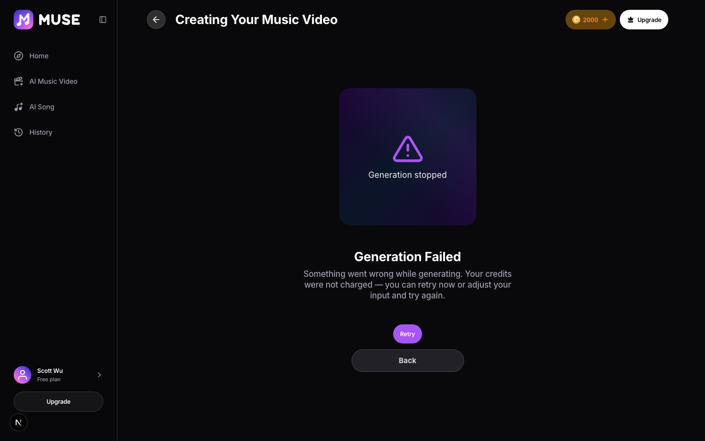
- 1Retry
- Same copy, same Retry/Back behavior as P3-E2 — only the stage differs.Direct mode has no storyboard stage to fail at, so its failure always happens here, at creating.
Choose Song, Import, Trim, Face Picker, and Settings, focused on the numeric/format rules QA tests individually.
- P4-S1 Opens Choose Song, then taps the Sample Songs tab.
- P4-S2 Views the Sample Songs list.
- P4-S3 Selects Import Audio and picks a non-audio file.
- P4-S4 Picks a valid-format audio file over 50MB.
- P4-S5 Drags the trim window’s end handle to under 30 seconds.
- P4-S6 Uploads a character photo (not a Sample Photo).
- P4-S7 Opens Settings.
- P4-S8 Taps High while on the free plan.
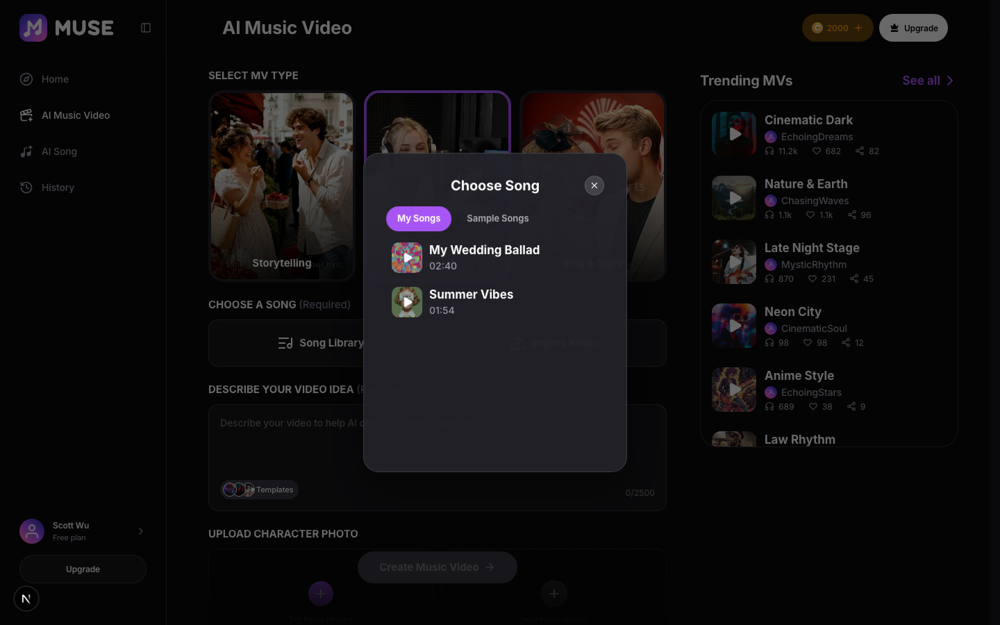
- 1Sample Songs
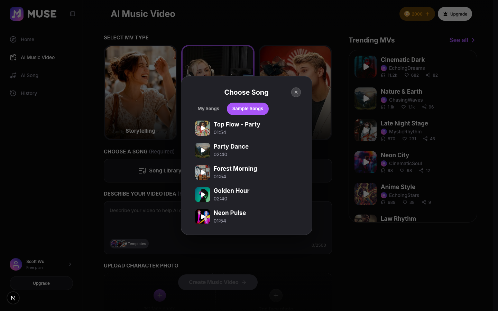
- Titles shown: “Top Flow - Party”, “Party Dance”, “Forest Morning”, “Golden Hour”, “Neon Pulse”
- Sample songs route through Trim exactly like a library or imported song (AC-MV-02).Sample-song trimming is web-new — the app only trims library imports.
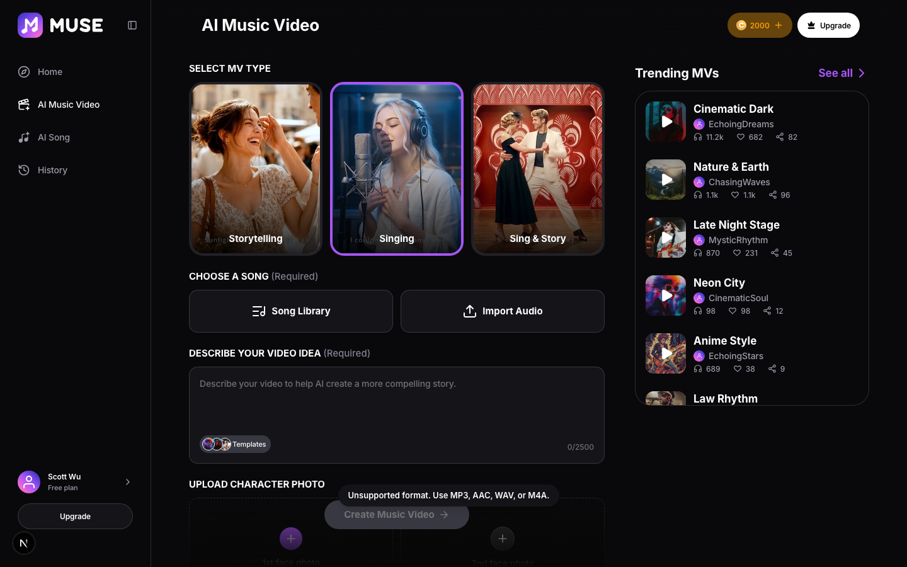
- Toast: “Unsupported format. Use MP3, AAC, WAV, or M4A.”
- Import accepts only MP3/AAC/WAV/M4A, by extension or MIME (MV-02, AC-MV-17).Anything else is rejected outright.
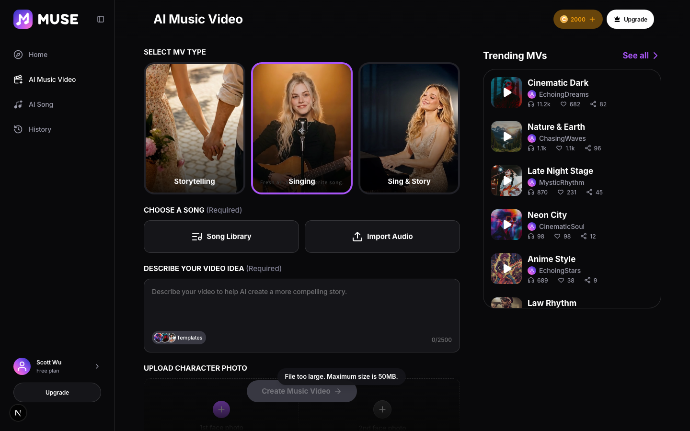
- Toast: “File too large. Maximum size is 50MB.”
- The 50MB ceiling applies even to an otherwise valid format (MV-02, AC-MV-17).Format and size are independent checks; either alone can reject.
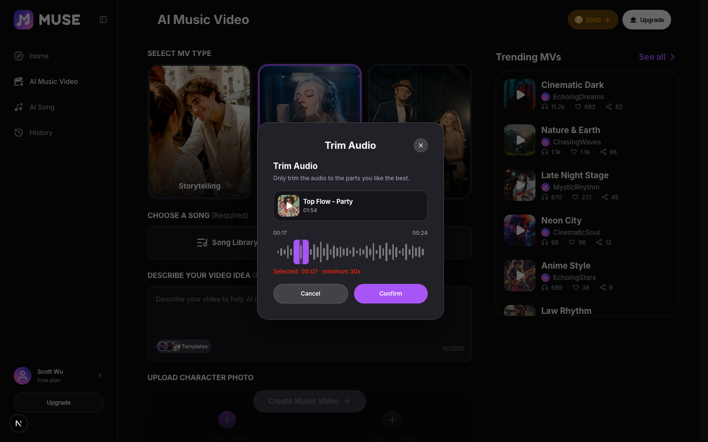
- 1Selected
- Hint format: “Selected: 00:07 · minimum 30s”
- Confirm is disabled while the selected length is under 30s (MV-01, AC-MV-16).The boundary is inclusive at exactly 30s and up; anything shorter blocks Confirm.
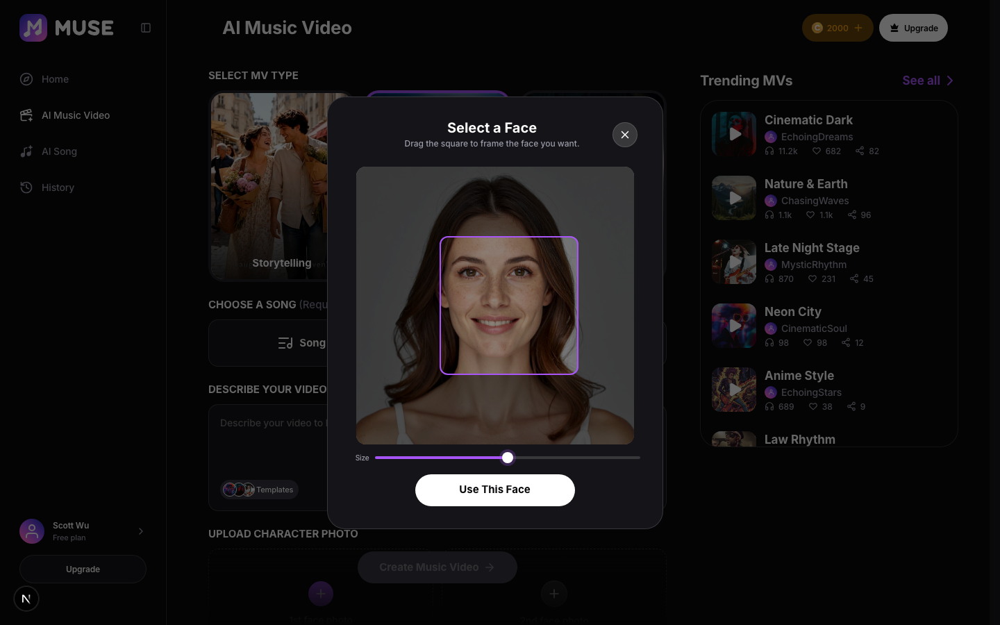
- 1Use This Face
- Dialog title: “Select a Face”
- Subtitle: “Drag the square to frame the face you want”
- Button: “Use This Face”
- Crop is manual only — no auto face detection (TBD-MV-03).The component supports detected-face suggestions but /mv/room does not pass any in.
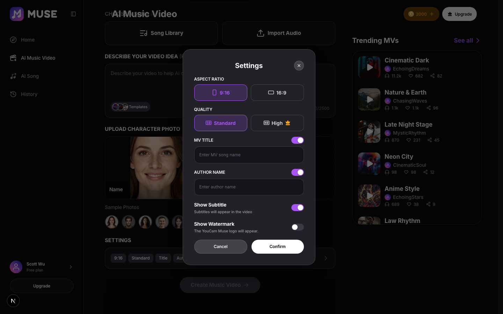
- 1High
- Dialog title: “Settings”
- Section labels: “ASPECT RATIO”, “QUALITY”, “MV TITLE”, “AUTHOR NAME”
- Toggle hints: “Subtitles will appear in the video”, “The YouCam Muse logo will appear.”
- On the free plan, tapping High opens the subscribe IAP instead of selecting it (MV-04, AC-MV-18b).Subscribers select High normally — see P4-S8.
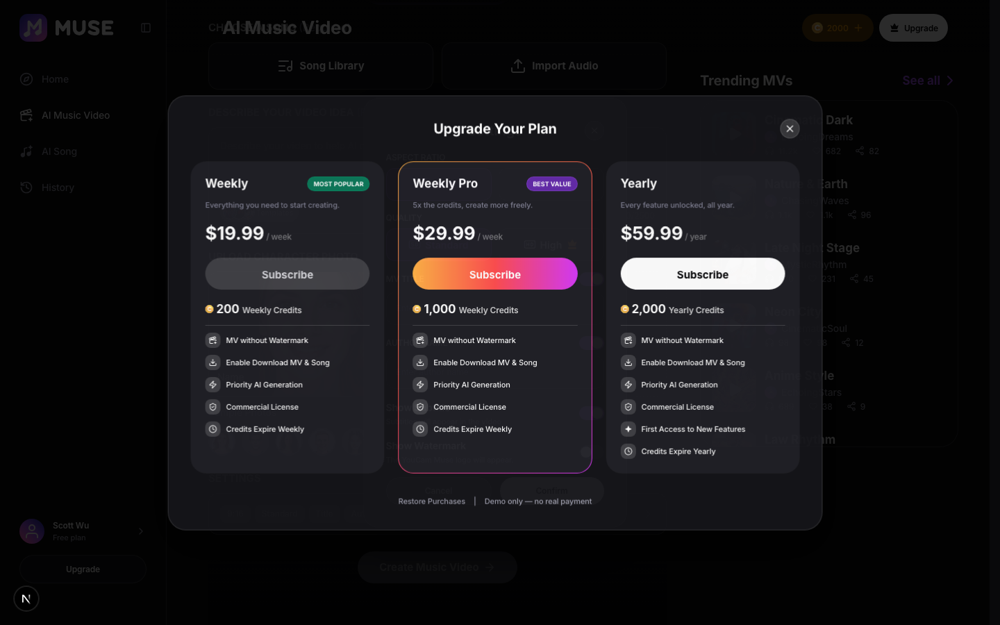
- Title: “Upgrade Your Plan”
- Footer: “Demo only — no real payment”
- Reuses the site’s shared subscribe IAP (same dialog as the Song spec’s P5-S1).Closing it leaves Quality on Standard.
A signed-out visitor can browse and compose freely; only Song Library and Create Music Video are gated.
- P5-S1 A signed-out visitor arrives at /mv/room.
- P5-S2 Imports a local audio file, then confirms Trim.
- P5-S3 Fills the description, then taps Create Music Video.
- P5-S4 Taps a sign-in provider (Apple or Google — both mocked).
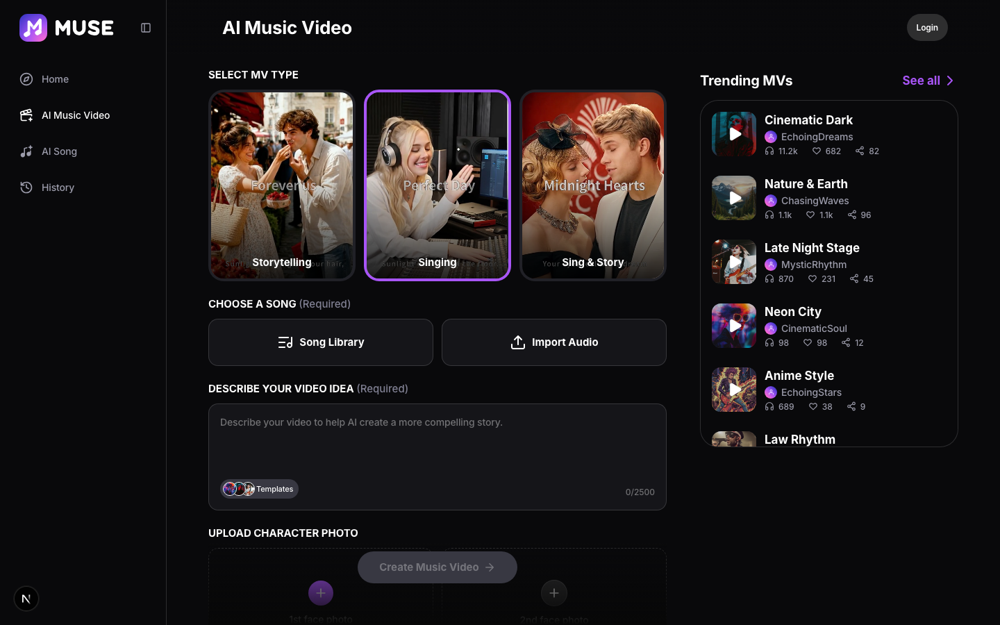
- /mv/room has no route guard (AC-MV-01b).Unlike most authed routes, this screen is the destination of the marketing Navbar’s Start for Free, so a guest must be able to browse and compose before signing in.
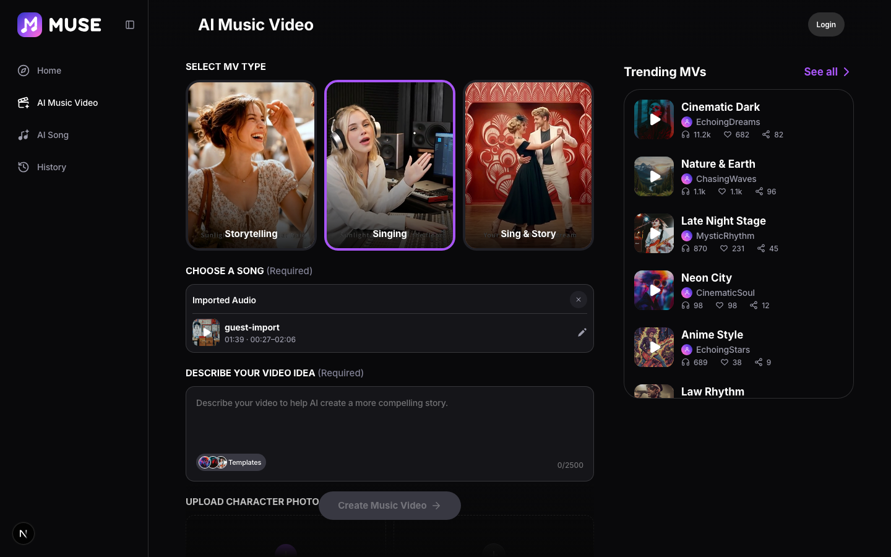
- Source label after import: “Imported Audio”
- Import Audio stays ungated even for a guest (AC-MV-01b).A file the user already holds locally is not account data — it is the only song source a guest can use without signing in, since Song Library IS gated.
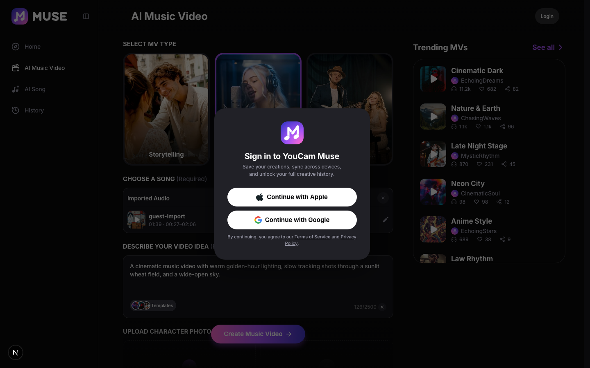
- Title: “Sign in to YouCam Muse”
- Subtitle: “Save your creations, sync across devices, and unlock your full creative history.”
- Buttons: “Continue with Apple”, “Continue with Google”
- Reuses the site’s shared sign-in modal (same as the Song spec’s P4-S1).The gate is on the ACTION (Create Music Video, and separately Song Library), never on the route.
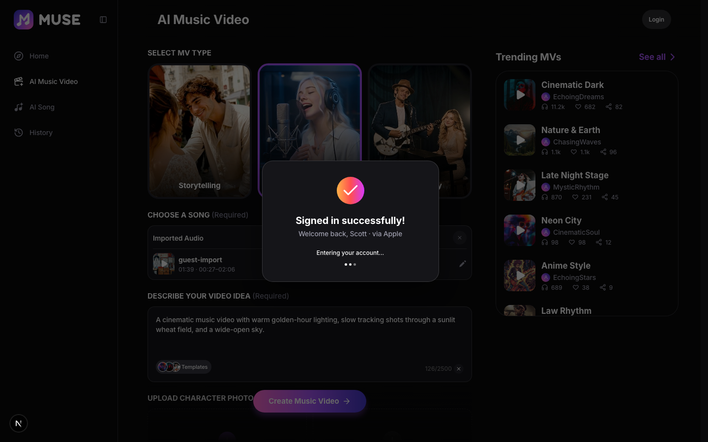
- Message: “Signed in successfully!” — “Welcome back, Scott · via Apple”
- The guest never returns to a blank compose screen after signing in — the action that opened the modal resumes.Here, that is the mode chooser Create Music Video would have opened.
- The insufficient-credit check (P6-S1) runs only after sign-in resumes the action, never while still signed out.A guest is never shown the buy-credits upsell for an account they do not have yet.
One independent screen — not a continuation of P5.
- P6-S1 A signed-in user on the default (unfunded) balance composes a brief and picks Create Storyboard First.
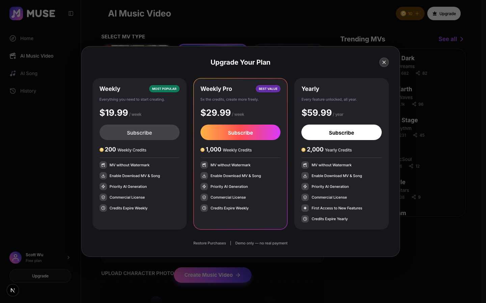
- Title: “Upgrade Your Plan”
- The balance/cost threshold is not asserted here.Exact numbers come from the Credit Consume MSR (References).
- The default demo balance is already below MV’s cheapest possible generation.So an unfunded signed-in account reaches this gate on its very first attempt, at either mode card.
One independent screen — not a continuation of P5 or P6.
- P7-S1 A signed-in user with zero completed MVs (or a fresh page load) arrives at /mv/room.
- P7-S2 Generates one MV in-session (client-side navigation only, no reload), then returns to /mv/room via Recreate.
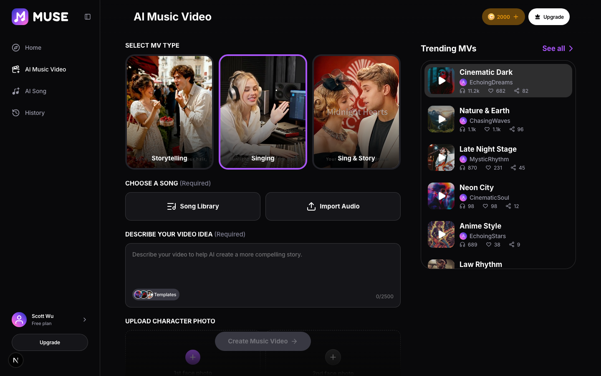
- 1See all
- History is in-memory only, so a page reload puts the rail back to Trending even after generating an MV (prototype_deltas).A real backend would keep the account’s own completed MVs across a reload.
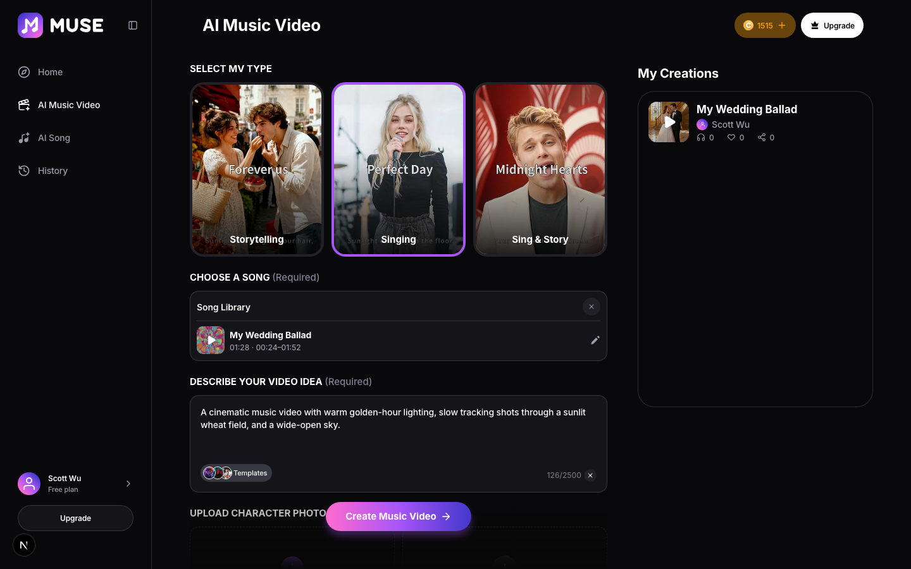
- Section label: “My Creations”
- The swap needs BOTH conditions — signed in AND at least one completed MV; either alone still shows Trending MVs.
- My Creations drops the “See all” link that Trending MVs has.
Five independent single-screen scenarios on /mv/result, starting from an already-generated result — not a continuation of P1/P2, and not a connected journey with each other.
- P8-S1 Taps Like.
- P8-S2 Taps Share.
- P8-S3 Turns the Publish toggle on.
- P8-S4 Taps Confirm.
- P8-S5 Opens a completed MV from a /history row (cold start, no prior flow state).
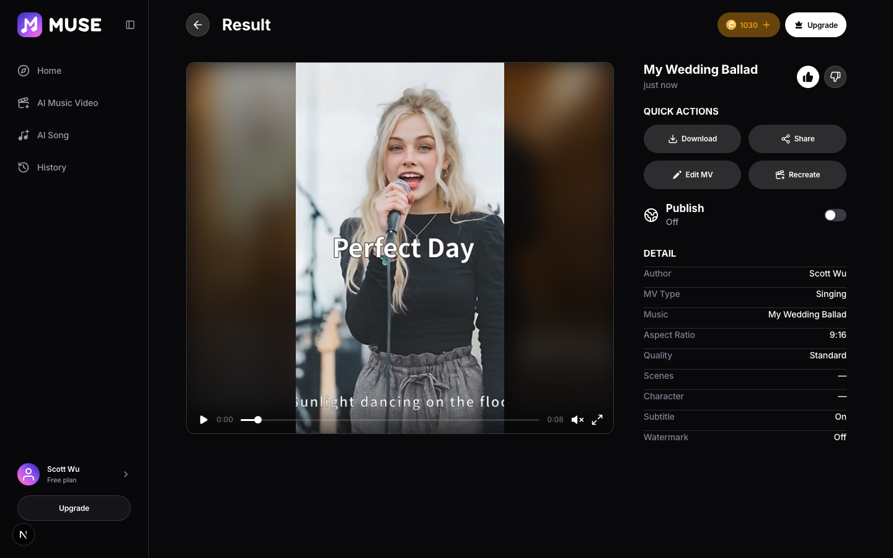
- 1Like
- Like/Dislike is local-only — no API call, no History write, same pattern as the Song spec.A user may like their own creation.
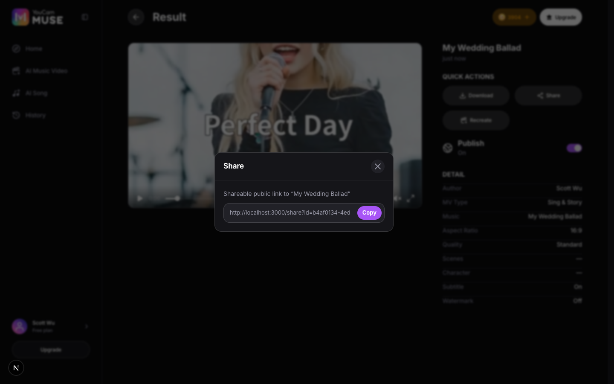
- Title: “Share”
- Body: Shareable public link to “{title}”
- Button: “Copy”
- Download saves the fixture render, not a per-row unique file (mock reality).Same limitation the Song spec’s result screen has for its own Download.
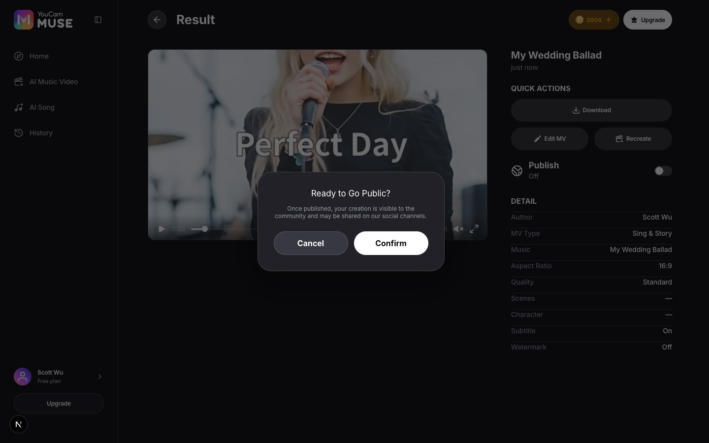
- 1Confirm
- Title: “Ready to Go Public?”
- Body: “Once published, your creation is visible to the community and may be shared on our social channels.”
- Buttons: “Cancel”, “Confirm”
- MV’s Publish requires this confirm step; Song’s equivalent toggle does not.Same shared confirm dialog History uses for its own row-level publish.
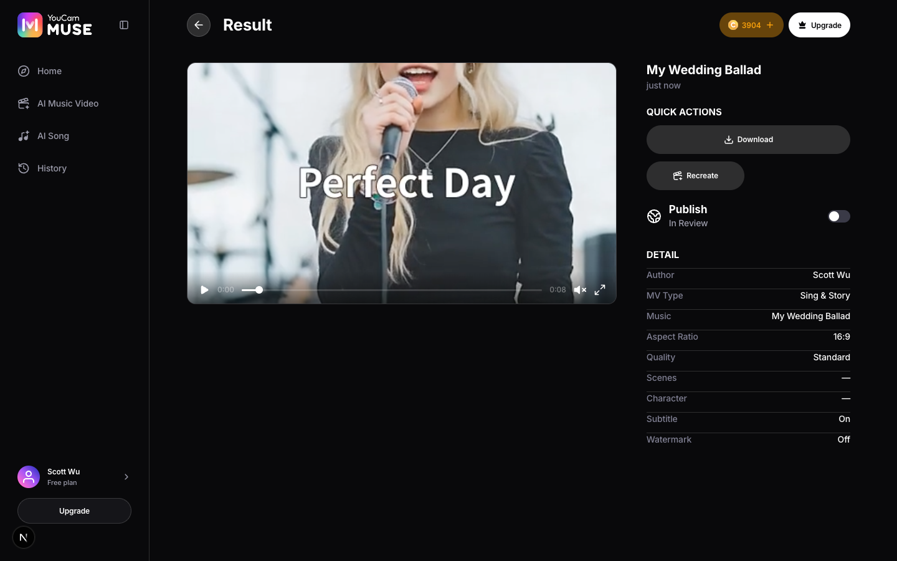
- Publish state: “Published · pending review”
- Replaced button: “Unpublish to edit”
- A published (or in-review) MV cannot be edited directly (TBD-MV-13, MV-E7).“Unpublish to edit” renders in a neutral (white/black) style, distinct from the accent-colored “Edit MV” it replaces.
- Tapping it unpublishes, after which the button returns to accent “Edit MV” and opens the editor.
- The backend review pipeline behind “pending review” is undefined (TBD-MV-06).Only the front-end publish-confirm and this status label are built.
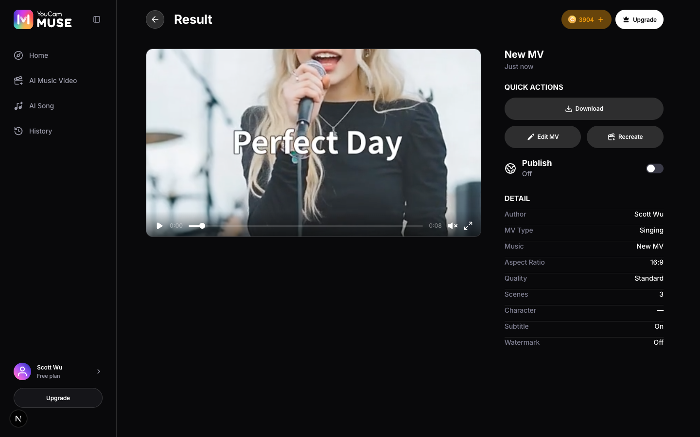
- Flow state is seeded by `useOpenCreation`, not carried over from a generation.This is what makes Share build a link to THIS row rather than whatever was last generated.
- Back returns to /history (its fallback), via `router.back()`.The generation screens `replace` rather than `push`, so Back off a freshly rendered MV reaches /mv/room, not the creating screen.
- History’s own row controls (filters, row menu, publish, delete) are out of scope here.They belong to the History storyboard — this step covers only the hand-off INTO /mv/result.
Static content fixtures behind /mv/room’s Choose Song, Templates, and MV-type cards. Not a runtime API payload — a TypeScript module RD ships as real content (or a real API), not a fixture.
{
"MV_TYPES": [
{ "id": "storytelling", "name": "Storytelling" },
{ "id": "singing", "name": "Singing" },
{ "id": "hybrid", "name": "Sing & Story" }
],
"MY_SONGS": [ "My Wedding Ballad", "Summer Vibes" ],
"SAMPLE_SONGS": [
"Top Flow - Party", "Party Dance", "Forest Morning",
"Golden Hour", "Neon Pulse", "... 7 entries total"
],
"TEMPLATES": [
{ "name": "Neon City", "prompt": "A glamorous night drive through a neon-lit city..." },
"... 6 entries total"
]
}MV_TYPES{id, name, desc, video}[3]MY_SONGSSong[2]SAMPLE_SONGSSong[7]TEMPLATES{id, name, cover, prompt}[6]All four arrays are static fixtures with no CMS or per-account backing today (prototype_deltas). Only two real audio files exist behind the 9 total songs (`MY_SONGS` + `SAMPLE_SONGS`) — every song maps to one of them, so playback/trim previews always have real audio to work with.
The contract of each screen state. The flow diagram shows the transitions; this shows what each state must render.
| State | Entry condition | Visible / enabled | Transitions | Exit |
|---|---|---|---|---|
| EMPTY | Arrive /mv/room | Song and description both unset, Create Music Video disabled | → READY once both a song and a description exist | On Create Music Video |
| READY | Song set AND description non-empty | Create Music Video enabled | → MODE_SELECT on Create Music Video tap | On Create Music Video |
| MODE_SELECT | Create Music Video tapped | Mode chooser open, compose preserved underneath | → THINKING (storyboard-first) or → CREATING (direct) | On mode pick |
| THINKING | /mv/thinking after Storyboard First | Progress ring, step label, estimate, View Later | → STORYBOARD_EDIT on done · → FAILED on mock failure | On job outcome |
| STORYBOARD_EDIT | /mv/storyboard after a done storyboard job | Visual style / scenes editable, story / lyrics read-only, MV Song play-only, no Save | → CREATING via Generate MV | On Generate MV |
| CREATING | /mv/creating after direct mode or Generate MV | Progress ring, step label, estimate, View Later | → RESULT on done · → FAILED on mock failure | On job outcome |
| RESULT | /mv/result after a successful job | Player, Like/Dislike, Share, Download, Publish toggle, Recreate, Edit MV / Unpublish to edit, Detail panel | → MODE_SELECT via Recreate (returns to /mv/room) · → History via Back | On navigation away |
| FAILED | /mv/thinking or /mv/creating after a mock failure | Generation Failed message, Retry, Back | → THINKING/CREATING via Retry · → /mv/room via Back | On Retry or Back |
| Side rail: Trending MVs | Default — signed out, or signed in with zero completed MVs | NEW_MVS with a “See all” link (P7-S1) | → My Creations once both conditions below are met | — |
| Side rail: My Creations | Signed in AND ≥1 completed MV | The user’s own finished MVs, no “See all” (P7-S2) | → Trending MVs on sign-out or reload (History is in-memory) | — |
Undecided, and blocking something. Everything settled lives beside the rule it governs, not here.
| ID | Question | Blocks | Owner |
|---|---|---|---|
| Q-01 | Where does the Credit Consume MSR live, so RULES bullets can cite a real link instead of “TBD”? | Every credit-cost RULES bullet in this spec (P1-S4, P1-S9, P1-S10, P1-S13, P6-S1) | Product owner (carried over from the Song spec’s own open Q-01-equivalent, D-05) |
| Q-02 | When is the real (non-QA-hook) generation-failure trigger and message defined? | Whether production Retry can ever succeed (errors_note, P3) | RD / backend |
| Q-03 | Is TBD-MV-11’s empty-library empty-state (“You haven’t created any songs yet” + create shortcut) still planned for Choose Song? | P4-S1/S2 — cannot be captured until the seed can be emptied | Product owner |
| Q-04 | What does “pending review” actually do server-side once TBD-MV-06 is answered? | P8-S4’s publish flow — only the front-end confirm and status label exist today | RD (Curation PRD) |
Every acceptance criterion in plan.md and where this spec defines it — 22 of 26 map to a step. Write the test cases in your test tool; this table is the trace back to the spec.
| Criterion | What it asserts | Specified in |
|---|---|---|
| AC-MV-01 | Default mvType=singing; Create Music Video stays disabled until song AND description both exist. | P1-S1 · P1-S8 |
| AC-MV-01b | Guest: full compose screen with no sign-in modal; gate is on Song Library and Create Music Video only; Import Audio stays ungated. | P5-S1 · P5-S2 · P5-S3 · P5-S4 |
| AC-MV-02 | Any song source routes through Trim before it is set; on confirm, shows the song card with effective (trimmed) duration. | P1-S3 · P1-S4 · P1-S5 · P4-S2 |
| AC-MV-03 | Typed/pasted description beyond 2500 chars is rejected; programmatic fills (Templates) are not capped. | P1-S6 · P2-S2 |
| AC-MV-04 | Create Music Video clears the previous MV’s generation state and opens the mode chooser, preserving the brief. | P1-S9 |
| AC-MV-05 | Storyboard First navigates to /mv/thinking and starts a storyboard job; Directly navigates to /mv/creating and starts a render job. | P1-S10 · P2-S5 |
| AC-MV-06 | A started job inserts a Generating row in History; while processing shows progress/step/estimate/View Later. | P1-S10 · P1-S13 |
| AC-MV-07 | A done storyboard job navigates to /mv/storyboard populated with character image, song, visual style, story, scenes, and lyrics. | P1-S11 |
| AC-MV-08 | Visual Style and Scene text are editable and ephemeral (no Save); MV Song is play-only; edits carry into the next Generate MV. | P1-S11 |
| AC-MV-09 | Generate MV renders using the (possibly edited) storyboard and lands on /mv/result. | P1-S12 · P1-S13 · P1-S14 |
| AC-MV-10 | /mv/result loops muted video and exposes Like/Dislike, Share, Download, a Publish toggle with a “Ready to Go Public?” confirm on turn-on, Recreate, and Edit MV (replaced by “Unpublish to edit” while published). | P1-S14 · P8-S1 · P8-S2 · P8-S3 · P8-S4 |
| AC-MV-11 | A failed job shows the error state with Back and Retry, and marks the History row Failed. | P3-E2 · P3-E3 |
| AC-MV-12 | Regenerate scene / Recreate cover overwrite in place, with no picker and no undo, and decrement the balance. | Edit MV only — out of scope here; owned by the mv-edit spec (S3). |
| AC-MV-13 | Merge MV re-renders from the current cover/scenes and charges on generation start, refunded on failure. | Edit MV only — out of scope here; owned by the mv-edit spec (S3). |
| AC-MV-14 | Enhance on visual style, scene prompt, or cover description replaces that field with the matching `enhancePrompt` result. | P1-S11 |
| AC-MV-15 | Withdrawn upstream 2026-08-19 — it asserted generation does NOT change the balance, contradicting AC-MV-19 and the code. | Withdrawn in the area spec itself; superseded by AC-MV-19. Nothing should map to it. |
| AC-MV-16 | Trim stores {start,end} only when the selection is ≥30s; below that Confirm is disabled with a minimum-30s hint. | P1-S4 · P4-S5 |
| AC-MV-17 | Imported audio accepts only MP3/AAC/WAV/M4A ≤50MB and rejects anything else with an error toast. | P4-S3 · P4-S4 |
| AC-MV-18 | /mv/result reached from a History row shows that row’s MV, seeded fresh via useOpenCreation, with Back to /history. | P8-S5 |
| AC-MV-18b | On the free plan, tapping High quality opens the subscribe IAP instead of selecting it. | P4-S7 · P4-S8 |
| AC-MV-19 | Storyboard/render generation charges its cost on start and refunds on failure; insufficient balance routes to the buy-credits IAP instead of generating. | P1-S10 · P1-S13 · P3-E2 · P3-E3 · P6-S1 |
| AC-MV-17b | /mv/room, /mv/storyboard, /mv/result and /mv/edit render at 320/375/768/1024/1440/1920px with no overflow. | Only 1440px is verified here — five of its six widths are unverified by this spec. Every capture is a single desktop viewport (D8). The six-width sweep is e2e/visual-baseline.spec.ts, not this document. |
| AC-HIST-01 | History shows live jobs prepended to the seed list under All. | P1-S15 · P2-S6 |
| AC-HIST-03 | A done row shows a Done status pill. | P1-S15 · P2-S6 |
| GL-01 | When credits are below the generation cost, the CTA routes to the buy-credits IAP instead of starting generation. | P6-S1 |
| MV-P1-S0 | The compose side rail shows Trending MVs by default, swapping to My Creations once the user is signed in with at least one completed MV. | P7-S1 · P7-S2 |
| Error | Trigger | Message shown to user | Recovery | Refund? |
|---|---|---|---|---|
| MV generation fails | Description contains “[fail]” — the QA hook for a mid-generation failure; storyboard-first fails at thinking, direct fails at creating (MV-E1) | “Generation Failed — “Something went wrong while generating. Your credits were not charged — you can retry now or adjust your input and try again.”” | Retry re-runs the job from the same compose state (and re-fails, since it still contains “[fail]”); Back returns to /mv/room. | Yes, in full (AC-MV-11, AC-MV-19) — the balance returns to its pre-charge value. |
| Signed-out user taps Create Music Video or Song Library | Any compose state, no active session (P5-S1…S3) | “Sign-in modal opens over the compose screen; no credits upsell is shown; Import Audio stays ungated (AC-MV-01b)” | Sign in (P5-S4) resumes the original action automatically; dismissing the modal leaves the draft intact with no navigation | N/A — never charged, gated before generation starts |
| Balance below the storyboard/render cost | Signed in, credits < cost at either mode card (P6-S1) | “Buy-credits IAP opens (a subscription picker for a non-subscriber) instead of starting generation” | Close the IAP and top up, then retry | N/A — never charged, gated before generation starts |
| Reload mid-flow | Reloading /mv/thinking, /mv/storyboard, /mv/creating, or /mv/result with no in-memory flow state (MV-E2) | “Redirects to /mv/room — immediate on thinking/creating/result; a brief tolerant wait on /mv/storyboard for localStorage hydration” | Compose again from /mv/room; nothing to retry, since the job that would have generated the missing state existed only in memory | N/A — a reload this deep never reaches a charge in the first place |
| Import: unsupported format or file too large | A local file with a disallowed extension/MIME, or a valid one over 50MB (MV-02, P4-S3/S4) | “Toast — “Unsupported format. Use MP3, AAC, WAV, or M4A.” or “File too large. Maximum size is 50MB.”” | Pick a different file; the compose form is otherwise untouched | N/A — nothing was charged |
Production trigger for a real generation failure is undefined — the “[fail]” marker is a mock-only QA hook (specs/areas/02-mv-creation.md MV-E1). It is read once, when the job is first created, and reused when it re-renders, which is why the SAME marker fails storyboard-first at thinking and direct at creating, never both stages of one job.
Where the prototype fakes or stubs behaviour. Build the production must do column — never the prototype behaviour.
| Area | Prototype does | Production must do |
|---|---|---|
| Backend | Only `MockMuseApi` exists — there is no real backend anywhere in this repo. | A production build swaps in a real API implementing the same `MuseApi` contract; every job, poll, and cost in this spec is the mock’s behavior, not a guarantee about real timing or exact pricing. |
| Generation timing | The mock resolves a storyboard or render job in a few seconds of wall-clock time, regardless of the on-screen “~1 minute” / “~2 minutes” estimates. | Real generation duration is backend-determined; the on-screen estimates must reflect the actual expected wait or be removed. |
| In-memory History and credits | Both the History list and the credit balance are in-memory React state that resets to its default on every full page load (confirmed live in P7: reloading /mv/room puts the side rail back to Trending even right after generating an MV). | A real balance and History are server-held and must survive a reload; the charge must be atomic with the generation request rather than applied client-side before it. |
| Seeded libraries | My Songs (2), Sample Songs (5), Sample Photos (8), and Templates (6) are all static fixture arrays in `src/lib/mv/mock.ts`, not a real per-account library or a CMS-fed catalog. | Production needs a real per-account song/photo library and a CMS-authored template catalog; an always-populated Choose Song also means the intended empty-state (TBD-MV-11) is unbuilt and unverifiable here. |
| MV-E1’s deterministic re-fail | The “[fail]” marker is a QA-only hook with no production trigger; Retry re-runs the identical compose and therefore re-fails every time, which is why the on-screen “adjust your input” copy has no matching affordance in this build. | A real failure needs a real trigger (timeout, model error, moderation reject, …); production Retry should reasonably succeed once whatever caused the failure has cleared. |
| ID | Question | Decision |
|---|---|---|
| D-01 | What source replaces prd.md/plan.md for this repo? | specs/areas/02-mv-creation.md and 05-history.md (the existing as-built specs) plus direct verification against the running app, matching the Song spec’s D-01. |
| D-02 | MV is one spec or two? | Two (PLAN.md D1) — this document covers /mv/room through /mv/result; /mv/edit is its own spec, S3 (mv-edit), postponed. The cut lands where the user re-enters from the result screen and where charging changes from per-generation to per-micro-op. |
| D-03 | Comments layer for this spec? | Disabled — no Firebase backend exists in this repo yet, matching the Song spec. |
| D-04 | P2’s scope: Templates only, or Templates + Enhance? | Templates only (PLAN.md “S2 scope”) — Enhance is explicitly excluded from P2 and from this spec’s /mv/room screens generally, since `origin/main`’s `3bdff87` removed it from that screen for V1 (product owner, 2026-08-25) before this capture run began. |
| D-05 | Where do credit-cost numbers come from in this spec? | Nowhere — every RULES bullet that would assert a number points at the Credit Consume MSR instead (PLAN.md D2), matching the Song spec’s D-05. Verbatim on-screen text (e.g. a mode card’s live “15 Credits”) is unaffected, since that is a true fact about the current build regardless of what the MSR prices it at. |
| D-06 | /mv/creating still uses the pre-migration shared GenerationView — call it out how? | One RULES line on the step that captures it (P1-S13), sourced to specs/areas/02-mv-creation.md §1. Not a prototype_deltas row, since nothing about it is faked — it is a real, deliberate scope decision (DP has no design for this screen). |
| D-07 | Where does the MV Creation storyboard stop relative to History? | One closing step per generation path showing the new row in History (P1-S15, P2-S6); History’s own filters/menu/publish/delete stay out of scope (05-history.md already covers them), matching the Song spec’s D-02. |
| D-08 | A capture run 1 contradiction: two areas/02 lines still described the /mv/room Enhance button, which the rebase removed — fix in place? | Yes (PLAN.md D11) — MV-P1-S4’s row and AC-MV-14 both named a description-field Enhance shortcut that no longer exists on this screen (removed 2026-08-25, `3bdff87`, product owner). Both corrected in place with a ⚠️ note and this capture’s date, in the same branch as this spec. |
| D-09 | A real bug found while capturing (StoryboardGenerationScreen double-starting the storyboard job under Strict Mode) — fix now or document? | Fixed (`e739c4e`, 2026-08-27) — a one-file fix with an obvious e2e guard (PLAN.md D10). Same `started` ref pattern `GenerationView.tsx` already carries for the other two generation screens. The owed regression test was written and mutation-tested in both directions in this same session. |
| D-10 | Voided capture run 1 — reuse any of its 44 screenshots? | No — all void (PLAN.md “S2 scope”). They photographed a control (Enhance on /mv/room) the product owner had already removed from V1 the day after that run captured. Every screenshot in this spec is a fresh capture against the rebased tree; filenames were renumbered rather than left with a gap where the Enhance shot used to be. |
| D-11 | Viewport scope? | Desktop 1440 only (D8, PLAN.md programme decision) — the phone chrome and /mv/edit’s MobileSceneDetail get no QA storyboard here. |
| Item | Link | Owner |
|---|---|---|
| Credit Consume MSR — generation cost numbers | — | TBD |
| specs/areas/02-mv-creation.md §8 TBD-MV-03 | — | Multi-face auto-detect deferred — MVP keeps manual crop (P4-S6). |
| specs/areas/02-mv-creation.md §8 TBD-MV-06 | — | Publish-to-community backend pipeline undefined (P8-S4). |
| specs/areas/02-mv-creation.md §8 TBD-MV-11 | — | Choose Song’s empty-state is unbuilt — the seed is always populated (prototype_deltas). |